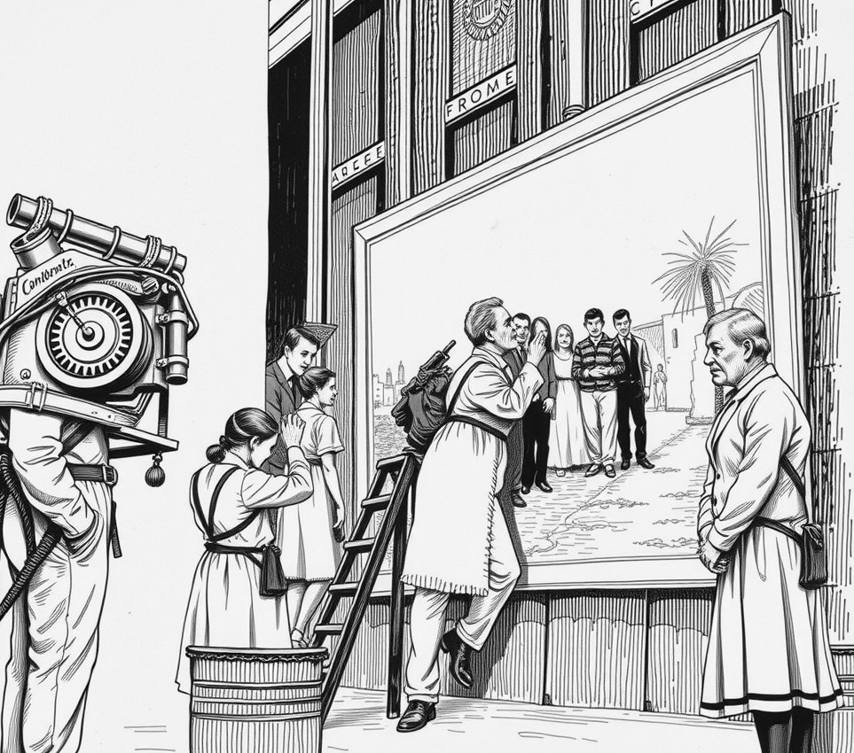

Gideon Sector, Freighter Seven Sisters . 22 April 2974

Chief Conservator Bamidele Osei completed the triennial re-varnishing of Rembrandt's The Night Watch on Thursday during a four-g engine burn that broke three passenger collarbones.
The 90-second manoeuvre pushed the migrant freighter Seven Sisters into deep transit, flattening crew into their bunks while Osei applied resin with a badger-hair brush.
"You cannot lay down varnish in zero gravity," Osei said, cleaning his palette knife. "The molecules pool into bubbles. Rembrandt painted under gravity, so the canvas demands four g to settle."
Engine burns consume twelve tonnes of fuel and require months of clearance from flight command.
"The captain asked if we could wait for our mid-voyage brake," Osei said. "I told her varnish does not wait for steering. Art dictates the course."
During the manoeuvre, Osei stood locked into a heavy harness, leaning against four times his weight to stroke the dark surface.
"My left arm went numb on the final pass," he said. "It was worth it. Look at the gloss on the captain's coat."
Flight controller Maya Lin confirmed the sudden burn pushed the ship two weeks off course and into a dust field.
"Controllers complain about course drift," Osei said. "Course drift can be fixed. A sagging resin coat is permanent."
Osei plans to re-examine the canvas during next year's emergency deceleration.